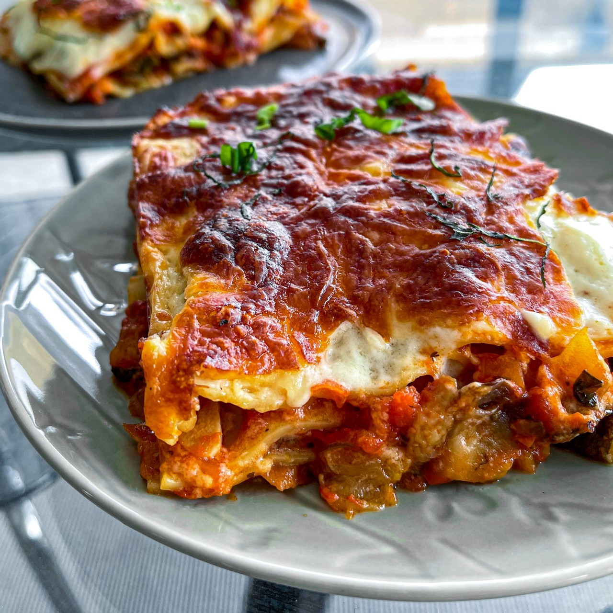

Lasagna

Description
Lasagne are a type of pasta, possibly one of the oldest types, made of very wide, flat sheets. Either term can also refer to an Italian dish made of stacked layers of lasagne alternating with fillings such as ragù, vegetables, cheeses, and seasonings and spices, like Italian seasoning, such as garlic, oregano and basil.
Ingredients
For the Ragu
- 2 tbsp olive oil
- 900g beef mince
- 2 onions
- 4 celery sticks
- 2 garlic cloves
- 2 level tbsp plain flour
- 150ml beef stock
- 1 tbsp reducrrant jelly
- 3 tbsp tomato puree
- 1 tbsp chopped thyme
- 2 x 400g cans chopped tomatoes
For the white sauce
- 50g butter
- 50g plain flour
- 750ml hot milk
- 2 tbsp Dijon mustard
- 50g parmesan
- salt and freshly ground black pepper
For the lasagna
- 12 lasagna sheets
- 75g mature cheddar, grated
Method
- Preheat the oven to160C/325F/Gas 3.
- For the ragu, heat a large frying pan until hot and add the oil. Cook the mince until browned all over. Remove from the heat and transfer to a plate. Add the onion, celery (if using) and garlic to the pan and cook until softened. Return the meat to the pan and stir in the flour. Add the stock and bring to the boil. Add the redcurrant jelly (or sugar), tomato purée and thyme, then stir well.
- Stir in the canned tomatoes. Bring to the boil again, cover and simmer in the oven for 1-½ hours, or until the beef is tender.
- For the white sauce, melt the butter in a saucepan. Add the flour and cook over the heat for one minute. Gradually whisk in the hot milk, whisking until thickened. Add the Dijon mustard and parmesan cheese and season well with salt and pepper.
- For the lasagne, put one third of the meat sauce in the base of a 2.3 litre/4 pint shallow ovenproof dish. Spoon one third of the white sauce on top. Arrange one layer of lasagne sheets on top. Season. Spoon half of the remaining meat sauce on top and then half of the white sauce. Put another layer of lasagne sheets on top, then the remaining meat sauce and remaining white sauce. Sprinkle over the cheddar cheese.
- Leave for six hours before cooking so that the pasta can start to soften.
- Preheat the oven temperature to 200C/400F/Gas 6.
- Cook in the middle of the oven for about 45 minutes- or until golden brown on top, bubbling around the edges and the pasta is soft.